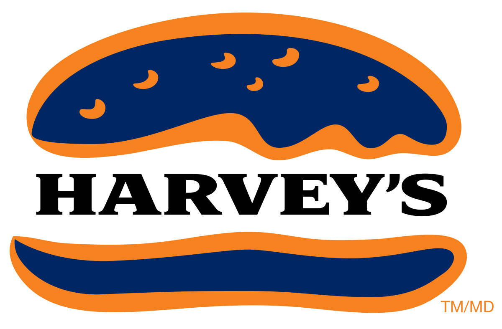

{% extends 'home.html' %}
{% block title %}Job History{% endblock %}
{% block header %}Job History{% endblock %}
{% block subheader %}{% endblock %}
{% block firstpic %} {% endblock %}
{% block first %}
{% endblock %}
{% block first %}
Hebrew Academy
{% endblock %}
{% block firstpara %}I have been working part-time at a school in Cote St Luc called Hebrew Academy. This picture was taken last year
. These are two kindergarten students and we had just finished making these animal themed masks. I worked
in many different parts of Hebrew Academy. Here I was working as a kindergarten monitor. I also was a recess and lunch monitor.
Along with that, more recently, I have been working in the high school. I have been tutoring kids in Science.{% endblock %}
{% block secondpara %}
Working at a school is a great experience. Working with kids is an even better one. I have learned
so much working here and the quality of mine that developped the most while working at Hebrew Academy has been my leadership.
When working with kids, especially younger ones, they look at you as an all knowing individual. They expect you to have
answers and to know everything. Working for and with these kids has taught me to be patient and understanding. My time at this school
has been a blessing and I am so grateful that I have been given the opportunity to work here.{% endblock %}
{% block toptitle %}
Harvey's Canada{% endblock %}
{% block onepara %}
I worked at Harvey's while I was in high school. This was from 2016-2017. I learned so much
from working at this fast food restaurant. The type of work I did was customer service, thorough cleaning and hamburger
construction. I learned that nothing can ever be clean enough when working in a restaurant. Another thing I learned was how
to serve customers aswell as work quickly and efficiently under pressure. I learnt this during our many lunch rushes. I also
learned that the customer is always right.{% endblock %}
{% block twopara %}{% endblock %}
{% block secondpic %}{% endblock %}
{% block thirdpic %} {% endblock %}
{% block threetitle %}
{% endblock %}
{% block threetitle %}
Formula 1{% endblock %}
{% block trepara %}
I worked for formula at the Grand Prix in Montreal in 2017. I worked selling Mercedes, Ferrari and
AMG merchandise. We had the pleasure of watching the races, as not many people come to buy merchandise while the race is going
We were lucky enough to be right next to the starting/finish line! {% endblock %}
{% block tretwopara %}{% endblock %}